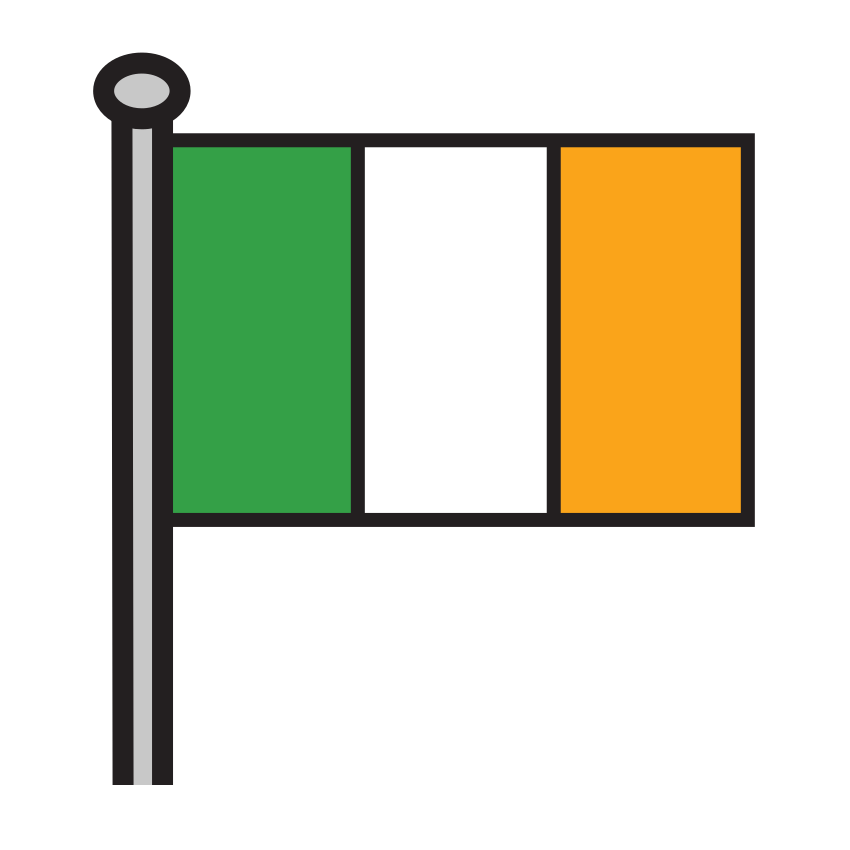
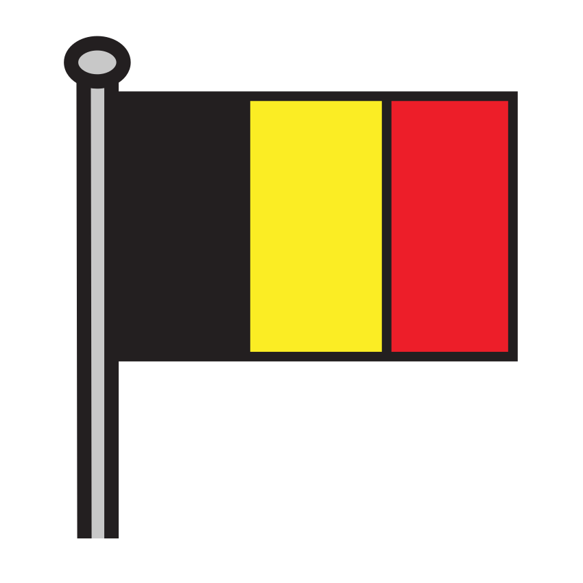
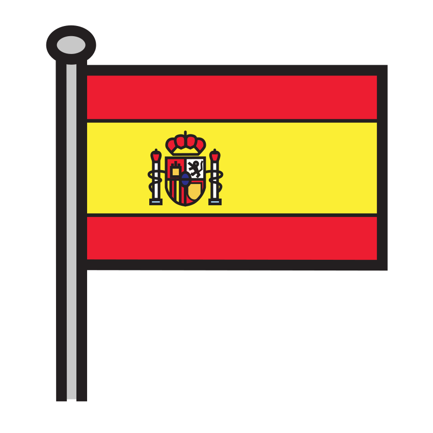

Prénom : Date :
Période 1 · Entraînement A1
Phonologie — syllabes
Les wagons des syllabes ★ je m’entraîne
Sous-objectif : frapper et compter les syllabes, puis classer les mots (prépare la fiche d’évaluation 1.3).
Consigne : 1. Frappe chaque mot et relie l’image au wagon qui a le bon nombre de ronds. 2. Frappe le mot et dessine un rond par syllabe dans la case. 3. Entoure seulement les images qui ont 2 syllabes.
1

ours

renard

hérisson

train

bateau

écureuil
★ Défi : frappe « chocolat »

: combien de syllabes ?
Compétence : dénombrer les syllabes d’un mot (1 à 3).Seul ☐ · Avec aide ☐ · À revoir ☐
Prénom : Date :
Période 1 · Entraînement A2
Lettres capitales
Les lettres du passeport ★ je m’entraîne
Sous-objectif : reconnaître et écrire des lettres capitales (prépare la fiche d’évaluation 1.4).
Consigne : 1. Dans chaque bande, entoure toutes les lettres pareilles à celle du début. 2. Écris la lettre qui manque dans le mot, en regardant le modèle. 3. Écris ton prénom en capitales.
1J’entoure la même lettre.
AAVAMNAHAEAKA
EEFELEBEFEEPE
OOQOCODOOGOQO
RRPRBRKRRPRBR
UUVUJUUOUVUWU
2J’écris la lettre qui manque.
★ Défi : épelle le mot OURS à ton voisin, sans regarder.
Compétences : reconnaître une lettre capitale parmi d’autres ; compléter un mot d’après un modèle.Seul ☐ · Avec aide ☐ · À revoir ☐
Prénom : Date :
Période 1 · Entraînement A3
Écriture — tracés
Les traverses et les rails ★ je m’entraîne
Sous-objectif : tracer des lignes droites et des ponts réguliers (prépare la fiche d’évaluation 1.5).
Consigne : 1. Repasse les traits debout puis continue-les jusqu’au bout de la bande. 2. Repasse les traits couchés puis continue-les. 3. Repasse les rails et continue-les. 4. Repasse les ponts et continue-les.
Compétences : tenir son crayon en pince ; tracer des lignes droites et des ponts.Seul ☐ · Avec aide ☐ · À revoir ☐
Prénom : Date :
Période 1 · Entraînement A4
Mathématiques — quantités
Les glands et les châtaignes ★ je m’entraîne
Sous-objectif : associer une petite quantité et son chiffre (prépare la fiche d’évaluation 1.7).
Consigne : 1. Compte et écris le chiffre dans la case. 2. Colorie autant d’images que le chiffre le demande. 3. Écris les chiffres en suivant le modèle.
★ Défi : dessine 4 glands dans la case :
Compétences : dénombrer jusqu’à 5 ; écrire les chiffres de 1 à 3.Seul ☐ · Avec aide ☐ · À revoir ☐
Prénom : Date :
Période 1 · Entraînement A5
Mathématiques — formes et motifs
Les formes et les guirlandes ★ je m’entraîne
Sous-objectif : reconnaître des formes tournées et continuer un motif simple (prépare les fiches d’évaluation 1.9 et 1.10).
Consigne : 1. Colorie tous les triangles, même ceux qui sont tournés. 2. Barre les formes qui ne sont pas des carrés. 3. Colorie tous les rectangles. 4. Continue chaque guirlande.
1Je colorie les triangles.
2Je barre ce qui n’est pas un carré.
3Je colorie les rectangles.
Compétences : reconnaître le triangle, le carré et le rectangle ; prolonger un motif AB.Seul ☐ · Avec aide ☐ · À revoir ☐
Prénom : Date :
Période 1 · Entraînement A6
Langage — vocabulaire et catégories
Dans la valise de Plume ★ je m’entraîne
Sous-objectif : ranger les mots des corpus dans les bonnes familles (prépare la fiche d’évaluation 1.1).
Consigne : 1. Nomme chaque image. Entoure en bleu ce qui sert à voyager, en vert les animaux, en rouge les végétaux. 2. Relie chaque animal à sa maison : le nid ou le terrier.
★ Défi : trouve un autre moyen de transport, un autre animal et une autre plante, et dis-les à la maîtresse.
Compétences : nommer les mots du corpus ; ranger un mot sous son hyperonyme.Seul ☐ · Avec aide ☐ · À revoir ☐
Prénom : Date :
Période 1 · Entraînement B1
Phonologie — syllabes
Le train des syllabes ★★ je consolide
Sous-objectif : compter les syllabes et repérer une syllabe dans un mot (prépare la fiche d’évaluation 1.3).
Consigne : 1. Frappe chaque mot et écris dans la case le nombre de syllabes. 2. Entoure les images où tu entends « cha ». Attention aux pièges ! 3. Range les images de la plus courte à la plus longue : écris 1, 2, 3 sous chaque image.
1

cerf

macareux

olive
croissant
chocolat

pont
écureuil
★ Défi : invente un mot de 4 syllabes et frappe-le pour la classe.
Compétences : dénombrer les syllabes ; localiser une syllabe ; comparer des mots selon leur longueur.Seul ☐ · Avec aide ☐ · À revoir ☐
Prénom : Date :
Période 1 · Entraînement B2
Lettres capitales — mots
Les mots de la valise ★★ je consolide
Sous-objectif : reconnaître un mot écrit et le copier (prépare la fiche d’évaluation 1.4).
Consigne : 1. Entoure le mot pareil au modèle, sur chaque ligne. 2. Copie chaque mot sous son image. 3. Écris ton prénom, puis le prénom d’un camarade en t’aidant des étiquettes.
1J’entoure le mot pareil.
| OURS | ROUS | OURS | OUSR |
| PONT | POTN | PANT | PONT |
 | LUOP | LOUP | LOPU | LOUP |
3Mon prénom, puis le prénom d’un camarade.
Compétences : discriminer des mots écrits ; copier des mots en capitales ; écrire son prénom.Seul ☐ · Avec aide ☐ · À revoir ☐
Prénom : Date :
Période 1 · Entraînement B3
Écriture — tracés
Le grand voyage de Plume ★★ je consolide
Sous-objectif : tracer des boucles et des creux réguliers (prépare la fiche d’évaluation 1.5).
Consigne : 1. Repasse les boucles du vol de la cigogne, puis continue-les. 2. Repasse les vagues de la mer (ponts à l’envers), puis continue-les. 3. Continue les ponts, puis les boucles, sans lever ton crayon. 4. Copie le mot VOYAGE.
Compétences : enchaîner des tracés courbes ; copier un mot en capitales.Seul ☐ · Avec aide ☐ · À revoir ☐
Prénom : Date :
Période 1 · Entraînement B4
Mathématiques — quantités et problèmes
Les valises des voyageurs ★★ je consolide
Sous-objectif : dénombrer, comparer et ajouter (prépare la fiche d’évaluation 1.7).
Consigne : 1. Compte les valises de chaque voyageur et écris le nombre. Puis entoure le nom du voyageur qui a le plus de valises et barre celui qui en a le moins. 2. Problème : Nils met 3 valises dans le train, puis Ana en met 2. Combien de valises dans le train ? Dessine, puis écris le nombre.
★ Défi : si Malik ajoute 1 valise, en a-t-il autant que Nils ? Dis pourquoi.
Compétences : dénombrer jusqu’à 7 ; comparer des collections ; résoudre un problème d’ajout.Seul ☐ · Avec aide ☐ · À revoir ☐
Prénom : Date :
Période 1 · Entraînement B5
Mathématiques — décompositions et motifs
Cinq cigognes et une guirlande ★★ je consolide
Sous-objectif : décomposer 5 et prolonger des motifs plus longs (prépare les fiches d’évaluation 1.8 et 1.10).
Consigne : 1. Il y a 5 cigognes en tout : écris combien il y en a dans l’autre nid. 2. Colorie de deux couleurs pour montrer 5 de deux façons différentes. 3. Continue les guirlandes, puis dis leur règle.
3



★ Défi : invente une guirlande « 2 fois, puis 1 fois » avec les drapeaux de ton choix.
Compétences : décomposer 5 ; prolonger des motifs ABC et AAB.Seul ☐ · Avec aide ☐ · À revoir ☐
Prénom : Date :
Période 1 · Entraînement B6
Mathématiques et le vivant
La file des animaux d’Europe ★★ je consolide
Sous-objectif : employer premier, deuxième, dernier et classer les animaux (prépare la fiche d’évaluation 1.12).
Consigne : 1. Les animaux attendent le train, de gauche à droite. Entoure le premier, barre le dernier, colorie le deuxième. 2. Écris 1 sous les animaux à poils et 2 sous les animaux à plumes. 3. Entoure l’animal qui a des bois sur la tête.
★ Défi : le renne aussi a des bois : trouve-le sur l’exercice 2 et dis où il vit.
Compétences : repérer le premier, le deuxième et le dernier ; classer selon la couverture du corps.Seul ☐ · Avec aide ☐ · À revoir ☐
Crédits des images
Les illustrations de ce cahier sont des pictogrammes Mulberry Symbols (Paxtoncrafts Charitable Trust, licence CC BY-SA 4.0, mulberrysymbols.org) et des pictogrammes ARASAAC (auteur : Sergio Palao, propriété du Gouvernement d’Aragon, Espagne, licence CC BY-NC-SA, arasaac.org). Merci à leurs auteurs et autrices.
 avion
avion